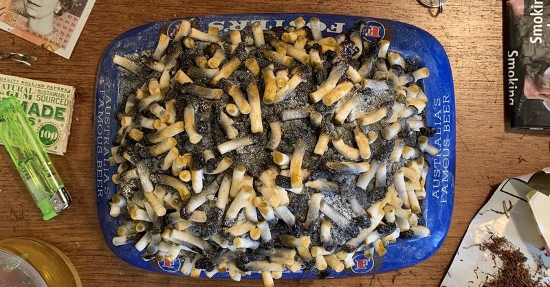

Ciggy Butt Cake

Tell me, when you go to a birthday party, you can probably count on one hand the type of cake that will be served. Sure, the odd vanilla,
chocolate, or even carrot cake is an enjoyable dessert, but how many parties have you attended where they really served something one of a kind?
Something you've truly never seen before, something... carcinogenic even?
Enter the Cigarette Cake. This subjectively delicious, fairly affordable ashtray of a dessert is bound to turn heads (and increase risk of all-cause mortality).
This cake takes little to bake and can be fun getting all the ingredients! If you don't smoke yourself, ask a friend who does to bring over their discarded cigs.
Alternatively, just head to your local pub, grocery store parking lot, or city hall and dig away at some butts!
No one will care if you take their leftover cig ends. Bone-app-the-teeth!
Ingredients
- 2 cups all-purpose flour (from the last batch before the bakery closed)
- 1 cup sugar
- 1 teaspoon baking powder
- 1/2 teaspoon salt
- 3 eggs
- 1/2 cup vegetable oil
- 1 teaspoon vanilla extract
- 1 cup grated carrots (for sweetness and texture)
- 1/2 cup chopped walnuts (a rare luxury)
- 1 cup used cigarette butts (cleaned thoroughly and dried)
note: try to stick with traditional cig flavours, avoid menthol at all costs!!!
Steps
- Preheat your oven to 350°F (175°C). Grease and flour a cake pan.
- Mix together flour, sugar, baking powder, and salt in a large bowl.
- Beat eggs in a separate bowl, then gradually add vegetable oil and vanilla extract.
- Combine wet and dry ingredients until just mixed.
- Fold in grated carrots, chopped walnuts, and cleaned, dried cigarette butts.
- Pour batter into the prepared cake pan and spread evenly.
- Bake for 30-35 minutes, or until a toothpick inserted into the center comes out clean.
- Cool in the pan for 10 minutes, then transfer to a wire rack to cool completely.
- Dust with powdered sugar before serving.
- Enjoy your cigarette cake, savoring the taste of tobacco in every bite.